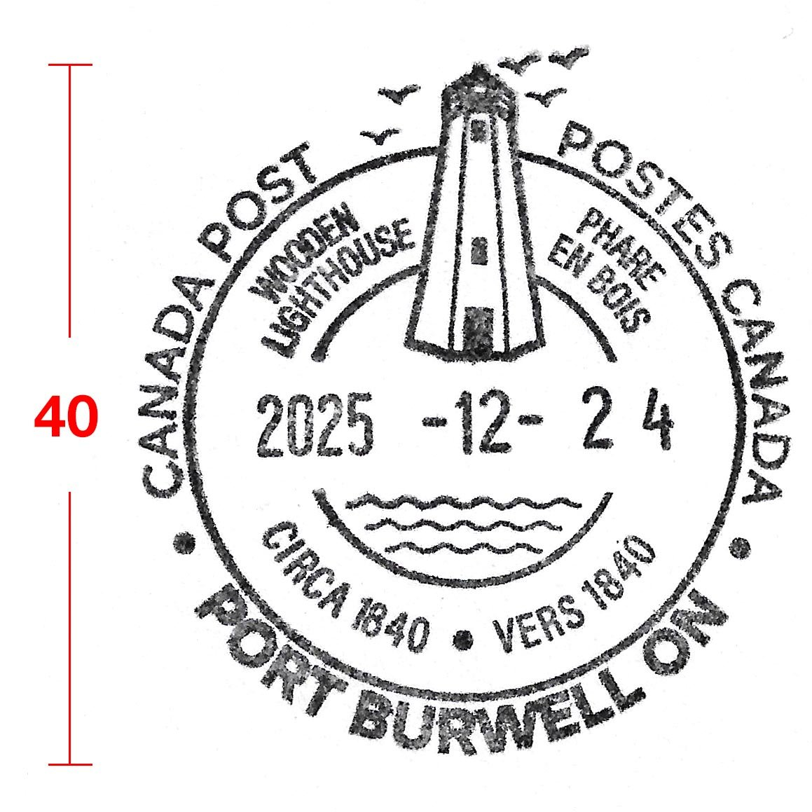

Port Burwell PO pictorial cancel
Wooden Lighthouse – Phare En Bois Circa 1840 – Vers 1840 · New
- Status
- Active
- Run dates
- ? to present
- Design
- "WOODEN LIGHTHOUSE / PHARE EN BOIS CIRCA 1840 / VERS 1840"; Port Burwell Lighthouse
- Ink colour
- Black
- Designer
- Unknown
- Post office
- Port Burwell PO
27 Wellington St
Port Burwell, ON
N0J 1T0 - Subjects
- lighthouse, architecture
Collect it by mail. Send your stamped covers, with a stamped return envelope, to the post office address above. How to collect pictorial cancels by mail · en français
 Port Burwell POOld
Port Burwell POOld Port Rowan POFrog
Port Rowan POFrog Port Rowan POBayfest
Port Rowan POBayfest